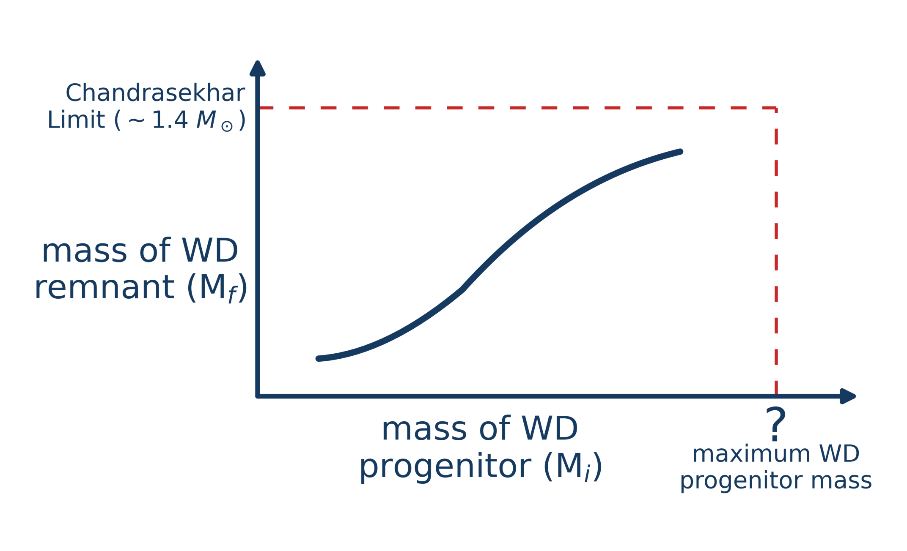
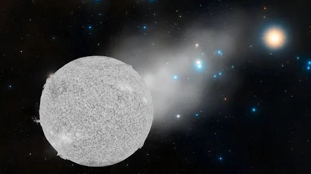
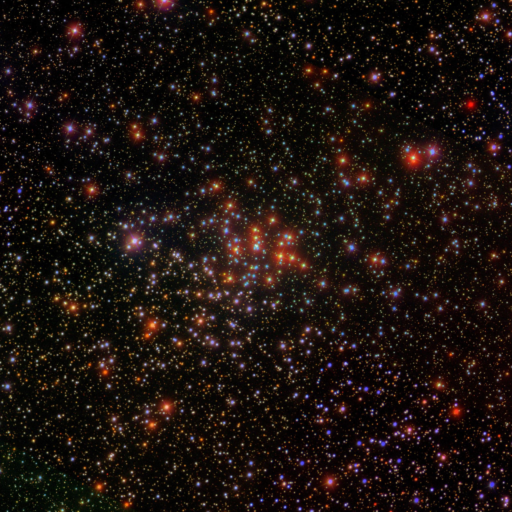
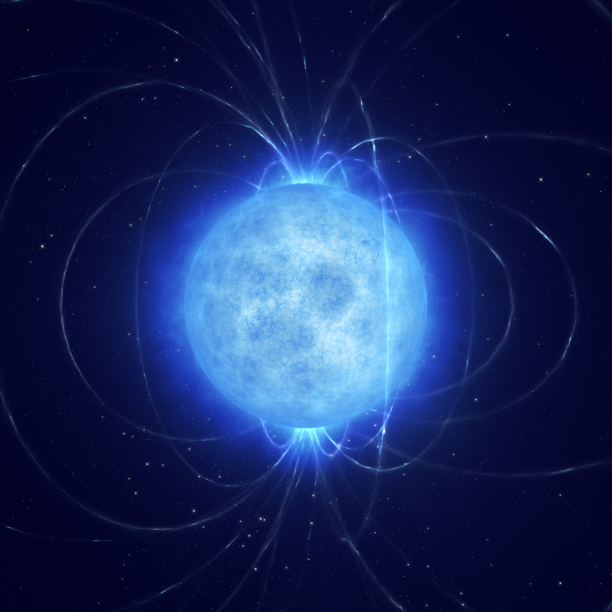

Research
My research uses white dwarfs in open clusters to study stellar evolution, with a particular focus on the white dwarf initial-final mass relation, alongside broader work across astrophysics. A complete list of my publications is available through my NASA ADS library.
The White Dwarf Initial-Final Mass Relation

The white dwarf initial-final mass relation connects the initial mass of a star to the mass of the white dwarf it ultimately leaves behind. It provides a direct empirical constraint on stellar mass loss and is an important ingredient in models of population synthesis, stellar evolution, and chemical enrichment. A major focus of my work has been to substantially expand the spectroscopically confirmed open-cluster white dwarfs population to better constrain this relation, while also improiving the uniform methodology of the analysis. As part of this work, I developed a heuristic isochrone fitting approach that retains the standard visual fitting used while providing a reproducible method for refining fits and estimating uncertainties. I also maintain wdifmr.org, which provides IFMRs and supporting data as a community resource.
Escaped White Dwarfs

Open clusters provide some of the best constraints on white dwarf evolution because their ages allow us to determine the masses of white dwarf progenitor stars. However, many clusters contain far fewer white dwarfs than expected, likely because stars are prone to escape their clusters through dynamical interactions or asymmetric mass loss. I use Gaia astrometry to trace the motions of nearby white dwarfs backward in time and identify objects that may have originated in open clusters. This work has uncovered several particularly massive cluster escapees, including ultramassive white dwarfs associated with Alpha Persei and a 1.317 solar mass white dwarf escaped from the Hyades, the most massive white dwarf strongly associated with an open cluster. Such objects probe the upper mass limit for white dwarf formation and the transition between stars that end their lives as white dwarfs and those that undergo core-collapse supernovae, an important ingredient in predicting supernova rates from stellar populations. They also provide rare constraints on the high-mass end of the white dwarf initial-final mass relation.
The Progenitor-Mass Gap

Our expanded sample of cluster white dwarfs revealed a pronounced observational gap at progenitor masses of approximately 2-2.7 solar masses, precisely where the initial-final mass relation may exhibit non-monotonic behavior. Confirming such behavior would provide an important test of late-stage stellar evolution, including the efficiency of convective overshooting, one of the major uncertainties in stellar evolution models. We showed that the gap is driven primarily by the nearby open-cluster population, which contains too few suitably aged systems with white dwarfs bright enough to be detected by Gaiae. We nevertheless identified and spectroscopically confirmed the first two cluster white dwarfs within the gap. We are now extending this work with two CFHT imaging programs targeting clusters expected to have recently produced substantial populations of gap region white dwarfs that fall beyond Gaia's detection limits.
Atypical White Dwarfs

Most white dwarfs are non-magnetic objects with hydrogen-dominated atmospheres, while helium-dominated atmospheres, strong magnetic fields, and other unusual spectral properties may trace different evolutionary histories. I am carrying out a comprehensive study of these atypical white dwarfs in open clusters to investigate both their origins and how the cluster environment may influence their evolution. This work examines their spatial and kinematic distributions within clusters, masses and progenitor properties, location relative to the DA initial-final mass relation, and relative occurrence compared with field white dwarf populations. By comparing atypical white dwarfs with both normal cluster DAs and their counterparts in the field, we can test whether the cluster environment leaves a measurable imprint on their formation or subsequent evolution, and investigate the roles of single-star evolution, binary interactions, and mergers in producing these populations.
Other Research Experience

My research experience extends beyond white dwarfs in open clusters into galactic, extragalactic, and cosmological astrophysics. I studied the evolution of compact galaxy groups in cosmological simulations, examining their assembly histories and comparison with observed compact groups. I have also used Gaia stellar kinematics to investigate the formation of the Milky Way's spiral structure by comparing observations of the Perseus arm with different theoretical models. My undergraduate honours thesis explored whether energy exchange between dark matter and dark energy could alleviate the Hubble tension. I also contributed to the science case for the CASTOR space telescope and investigated the possible origin of a highly magnetic white dwarf merger remnant.